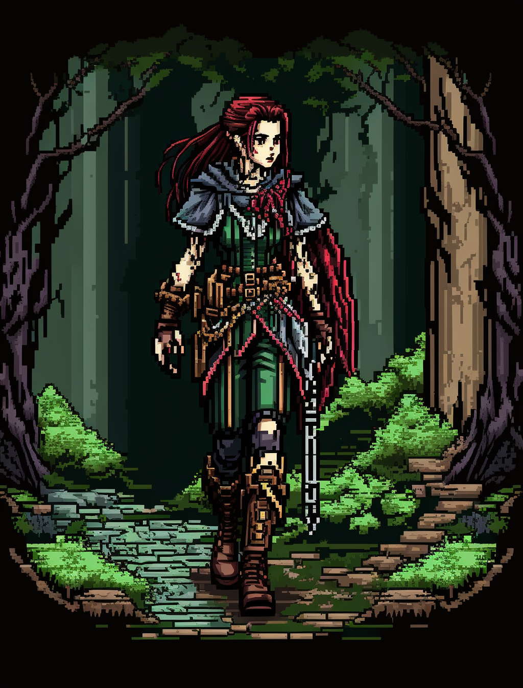

Travelers of 1
Mickey Mack
Bug Bear Ranger, Age 39
Status: Alive
Mickey Mack was born to a small clan of bugbears in the deep forests. From an early age, he showed an uncanny ability to track prey and was often the one sent out to bring back food for the clan. As he grew older, he became a skilled hunter and learned to rely on himself more than anyone else. One day while on a hunting trip, he stumbled upon the town of Newharbor and met a human woman named Marcy. The two fell in love and had a child together. However, tragedy struck when their child went missing, and despite Mickey's best efforts, he was never able to find him. The loss of his child hit Mickey hard, and soon after Marcy left him. Afterwards he left the clan to go on a never-ending quest to hopefully find his son again. He spent years wandering the forests and became even more skilled at hunting and survival. As he traveled, he found a new clue that leads Mickey to believe that his son is out west. With a reinvigorated spirit, he returned to Newharbor to set out on the trail to the west, determined to find his child and make a new life for himself.
Since walking the trail with his new friends, Mickey has suffered from bad luck and misfortune. While his trip began well with some hunting, at one point he challenged an orc worrior to a fight in which he lost all of his money, clothes, and his left ear. At Timberlake he defecated on a shopkeeper's floor and was arrested as result. After being bailed out he was later bitten by a very poisonous snake.
Nessa Zylkian
Half-Elf Rogue, Age 24
Status: Alive
Nessa Zylkian, a resilient and street-savvy half-elf, has lived a life of survival since the tender age of seven. Abandoned and left to navigate the unforgiving streets, she quickly adapted to the harsh realities of her environment. Through sheer determination, Nessa acquired skills in thievery, stealth, and deception, becoming a master of blending into the shadows and outsmarting both the law and those who sought to exploit her. Over the years, she built a network of fellow street dwellers and misfits, forming unlikely alliances based on mutual trust and shared experiences. Now, guided by a kind-hearted rogue named Rylan, Nessa has set foot on a new path. Mentored by Rylan, she seeks to channel her street-honed skills into more constructive endeavors. With a keen wit, a touch of mischief, and an unwavering loyalty, Nessa embarks on adventures beyond the shadows, aiming to make a difference in the lives of the downtrodden. Empathy for the suffering and a desire to protect the vulnerable drive her forward, as she strives to create a world where no child endures the hardships she once did. Nessa Zylkian, a survivor who thrives on resourcefulness, agility, and a dash of street-smart ingenuity, is determined to carve a new destiny and bring about positive change.
Since walking the trail with her new friends, Nessa has been quiet, She at one point tried to rob a shopkeeper in Timberlake by repeatedly telling him to "go to sleep."
Thalion Oakenheart
Half-Elf Artificer, Age 38
Status: Alive
Thalion Oakenheart was born to a human father and an elven mother, who were both traveling scholars. They settled in the up-and-coming town of Newharbor in Avaria when Thalion was still a child, and it was there that he discovered his love for tinkering. Thalion's first invention was a small mechanical owl named Orion, which he created when he was just ten years old. As he grew older, Thalion's tinkering skills only improved, and he began to create more and more complex machines. Despite his success as a craftsman, Thalion felt restless in Newharbor. He longed for new challenges and opportunities to grow his business. After much consideration, he decided to join a wagon train heading west. Thalion is determined to start his own business once he reaches the new frontier, and he hopes to use his tinkering skills to help build a better life for himself and others. Though he is excited about the journey ahead, Thalion is also nervous about the dangers that lie on the trail, especially the threat of bandits and dangerous creatures. Nonetheless, he is confident that his ingenuity and quick thinking will see him through any challenges that come his way.
Since walking the trail with his new friends, Thalion has tried his best to make good decisions to surive the trail. He sold his workshop in Newharbor in order to take out a loan from the Bank of Avarian Goblins, which hung over his head all the way to Timberlake. At one point he fell into a large pit at night and broke his ankle. Thalion also helped conviced to travlers to join the party to Ohterlon. At Timberlake Thalion extended his loan for more money.
Zairith Karn
Human Cleric, Age 23
Status: Alive
Zairith Karn was born on the streets of the bustling town of Newharbor, where he spent his early childhood fending for himself in the shadows of the crowded alleys. Despite his difficult circumstances, Zairith possessed a kind heart and a deep curiosity about the world around him. One day, while wandering the streets for scraps of food, he stumbled upon the local Garthen temple. There, he was taken in by the kind-hearted priests who saw potential in him and offered him a home and education. Zairith quickly took to the teachings of the Garthen faith and found a sense of purpose in the religion's message of hope and becoming one with nature after death. As he grew older, Zairith became determined to spread the word of Garthen to new lands. He longed to travel west, to the untamed wilderness where the native Kaltok people lived, and to share the teachings of his faith with them. Despite warnings from his elders, Zairith remained steadfast in his beliefs and set out on a journey to the frontier. Now, as he travels the Ohterlon Trail, Zairith is a beacon of hope for those around him, using his knowledge and devotion to heal the sick, offer comfort to the fearful, and spread the word of Garthen to all who will listen. Though he knows the dangers that lie ahead, he remains steadfast in his mission, trusting in his faith and his own inner strength to see him through whatever trials come his way.
Since walking the trail with his new friends, Zairith has remained steadfast in preserving his faith and morals, even at his own expense at some points. At one point he allowed blood foxes to tear him apart to avoid against against what he believed was a sign from Garth. Zairith has also been able to consistantly provide for himself with his sermons, which provide enough money for the basics. When he reached Timberlake ha learned of a new religion which could threaten his goal of spreading the Garthen faith.